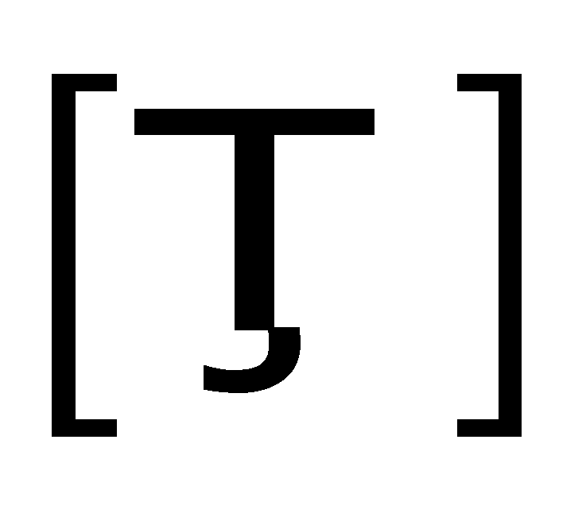
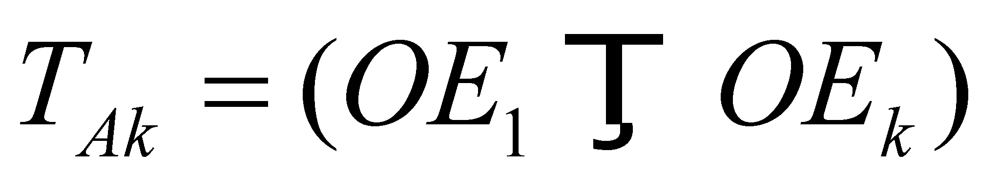
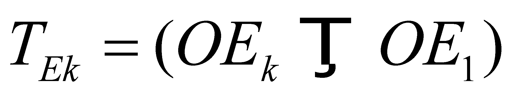
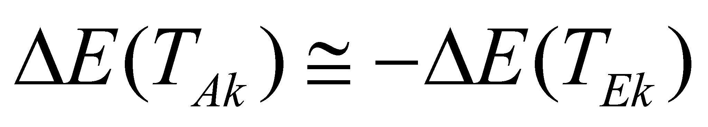

|
|
|
The transition between two energetic orbitals (EO) of the same EP123 is a state variation process of that particular EP which is placed on one of the structural orbitals (SO). We saw that an EP which lies on such a structural orbital, depending on the intensity of the external EF may have more energy levels which are associated with many EO. In case of the absence of the external fluxes (isolated system), the EP’s energy which occupies a SO has the lowest level, being related to a fundamental EO. The condition which is required for the energy received by EP from the external EF is that the energy to be less than the EF which re-circulates between the couple’s particles (bonding energy), otherwise, the driven EP shall be expelled from the system. The variation process of the state of an EP placed on SO, means a temporary desynchronisation process of a couple of EP placed on such orbitals, desynchronisation generated by the absorption of an external EF by one of the EP involved into the couple (usually, the external one). As long as the frequency rates of the space-temporal modulation of the EP participating to a couple are identical and synphasic, the electric fluxes (whose existential attribute is the electric charge) released by the two particles are entirely re-circulated between the two EP (there are no electric fluxes released outside the volume occupied by the two EP124). At the moment of receiving an EF from the outside, the receiver particle of that flux shall be desynchronized with its pair, and this desynchronization will last a while (at least as long as the disturbing flux is maintained).
The reaction of the EP ensemble at the incidence of an external EF is the same as the reaction of any MS: the incident flux shall be opposed to the reaction flux, until one of the fluxes (either the incident or the reaction one) would have been depleted its resources. If the energy provided by the external EF is higher than the EF re-circulated between the two EP (bonding energy), the couple shall be broken (the expulsion of the driven EP from system takes place), according to the law IV of MS formation (see section 7.8). If this energy is less-valued, EP which receives the flux shall be temporarily converted into an EO with a higher energy, excited orbital, (absorption-storage phase of the incident flux) until the incident EF would be finished, and then the reverse process of re-sending the energy surplus (EF temporarily stored) shall come next, towards outside (reflection), with the returning on the fundamental EO.
If the energy state of a non-disturbed SO where the particle is placed is being noted with OE1 (fundamental orbital), and with OEk the orbital where it will be placed as a result of the absorption of the external EF (excited orbital), there will be two types of state transitions of the disturbed (driven) EP by the external flux, transitions which are symbolically represented by the transition operator  in the following relations:
 (X.24.2.1)
and:
 (X.24.2.2)
The first is the absorption transition (of receiving and storing of the external EF), and the second, the emission (reflection) transition. Between the energy variations implied by above mentioned transitions the following relation may be applied:
 (X.24.2.3)
where the approximately equal mark is noticed instead of the equality mark, because the reflected flux is always less than the incident one, but this thing is usually insignificant because there are quite little differences.
123 The orbitals which are different, for example, by means of the harmonics rank where the synphase of the orbital frequency of the excited EP takes place.
124 Fact which generates the external electric neutrality of this couple.
Copyright © 2006-2011 Aurel Rusu. All rights reserved.